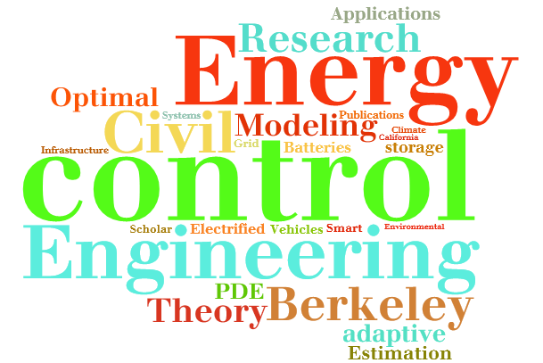
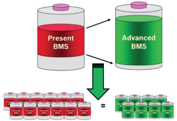
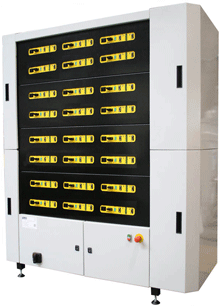
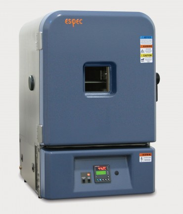
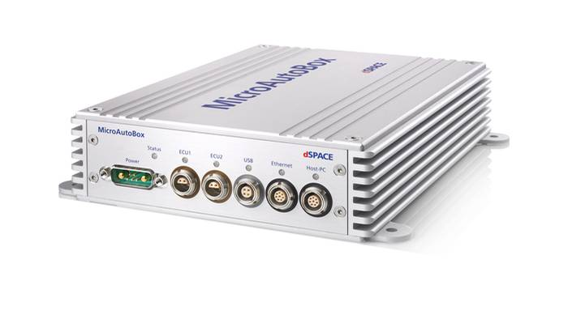
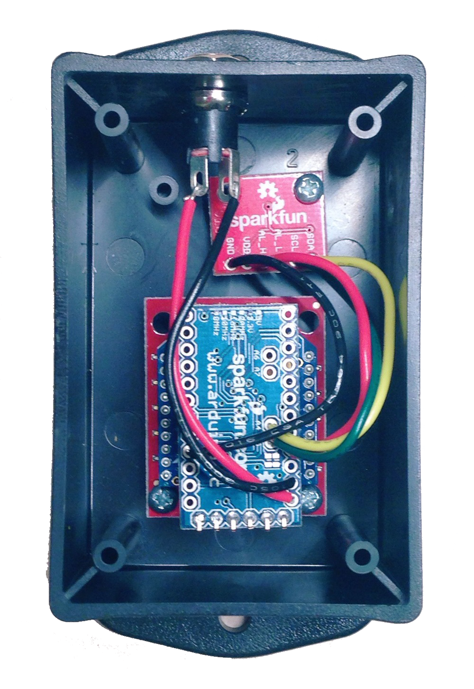
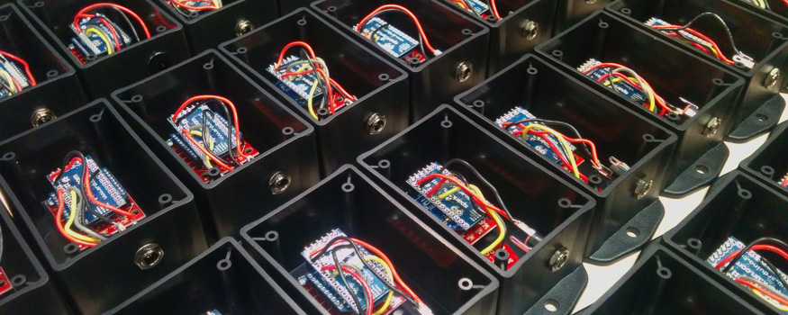
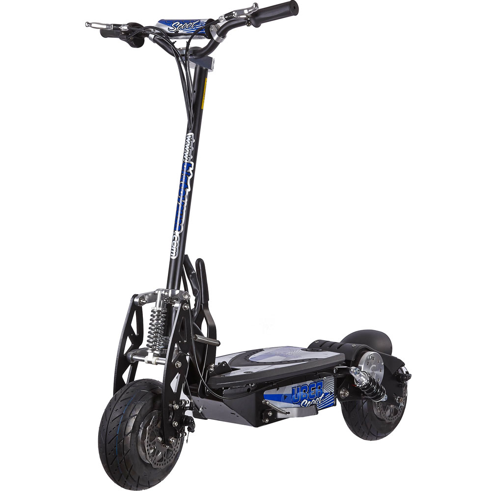

Interests

Across the world, communities are rapidly urbanizing. These growing cities are characterized by a tightly woven infrastructure where mobility and energy networks are diversifying and merging. For example, electrified transportation creates unique mobility options and constraints while simultaneously imposing new energy demands and storage opportunities. Maximizing the efficiency of such interconnected systems requires strong fundamental science for modeling, estimation, and control, contextualized within energy and mobility applications.
Keywords: Optimal and adaptive control, PDE control, energy storage, smart grid systems, and batteries.
Keywords: Optimal and adaptive control, PDE control, energy storage, smart grid systems, and batteries.
Advanced Battery Management Systems

Today's electric vehicle batteries are expensive and prone to unexpected failure. Batteries are complex systems, and developing techniques to cost-effectively monitor and manage important performance measures while predicting battery cell degradation and failure remains a key technological challenge. There is a critical need for breakthrough technologies that can be practically deployed for superior management of both electric vehicle batteries and renewable energy storage systems.
We are developing battery monitoring and control software to improve the capacity, safety, and charge rate of electric vehicle batteries. Conventional methods for preventing premature aging and failures in electric vehicle batteries involve expensive and heavy overdesign of the battery and tend to result in inefficient use of available battery capacity. The objective is to increase usable capacity and enhance charging rates by improving the ability to estimate battery health in real-time, to predict and manage the impact of charge and discharge cycles on battery health, and to minimize battery degradation.
We are developing battery monitoring and control software to improve the capacity, safety, and charge rate of electric vehicle batteries. Conventional methods for preventing premature aging and failures in electric vehicle batteries involve expensive and heavy overdesign of the battery and tend to result in inefficient use of available battery capacity. The objective is to increase usable capacity and enhance charging rates by improving the ability to estimate battery health in real-time, to predict and manage the impact of charge and discharge cycles on battery health, and to minimize battery degradation.
| Collaborators: | Robert Bosch Research and Technology Center | Palo Alto, CA Prof. Miroslav Krstic | UC San Diego |
| Funding: | DOE ARPA-E AMPED Program National Science Foundation Samsung |
| Featured Publications: |
Better Batteries through Electrochemistry and Controls
S. J. Moura and H. Perez ASME Dynamic Systems and Control Magazine |
|
Adaptive PDE Observer for Battery SOC/SOH Estimation via an Electrochemical Model
S. J. Moura, N. A. Chaturvedi, and M. Krstic ASME Journal of Dynamic Systems, Measurement, and Control, Oct 2013 |
|
|
Enhanced Performance of Li-ion Batteries via Modified Reference Governors & Electrochemical Models
H. E. Perez, N. Shahmohammadhamedani, S. J. Moura IEEE/ASME Transactions on Mechatronics, to appear |
Building Energy Management

This research investigates a new paradigm for monitoring demand response (DR) enabled loads. We examine the application of partial differential equation (PDE) models for estimation and control. Specifically, we model the dynamics of thermostatically controlled load (TCL) populations, instead of modeling each TCL individually. This aggregate modeling approach produces elegant algorithms that are simple to implement, high performance, and robust. Ultimately, these algorithms advance current approaches by requiring minimal sensing infrastructure, providing unprecedented monitoring detail, and enabling predictive control for integrating variable renewable power. This project generates experimental data to test the feasibility of these algorithms. Moreover, it enhances sustainability efforts on UC campuses.
| Collaborators: | Prof. Jae Wan Park | UC Davis Dr. Rakesh Patil | NEC Laboratories America, Inc. Prof. Jan Bendsten | Aalborg University, Denmark Fung Institute for Engineering Leadership | UC Berkeley |
Funding: | California Energy Commission EISG Program CITRIS Seed Funding |
| Featured Publications: |
Data Enabled Predictive Energy Management of a PV-Battery Smart Home Nanogrid
C. Sun, F. Sun, S. J. Moura 2015 American Control Conference; Chicago, IL |
|
Modeling Heterogeneous Populations of Thermostatically Controlled Loads using Diffusion-Advection PDEs
S. J. Moura, V. Ruiz, and J. Bendsten, 2013 ASME Dynamic Systems and Control Conference; Stanford, CA Invited paper |
|
|
Observer Design for Boundary Coupled PDEs: Application to Thermostatically Controlled Loads in Smart Grids
S. J. Moura, J. Bendsten, and V. Ruiz 2013 IEEE Conference on Decision and Control; Florence, Italy Invited paper |
Vehicle Grid Integration (VGI)
Plug-in electric vehicles (PEVs) provide a compelling opportunity for supplying electric power system services. If properly managed, PEVs can enhance energy infrastructure resilience, enable renewable integration, and reduce economic costs for consumers and energy providers. PEVs are ideal suppliers of several ancillary services, including frequency regulation and voltage support. They will also make availability of sustainable energy resources more reliable, predictable and less disruptive to the electric grid. Supplying these services may be a significant added revenue stream for PEVs that are statistically parked and unused 94% of each day. Realizing this vision, however, requires new and expanded modeling and control system tools.
| Collaborators: | Dr. Samveg Saxena | Lawrence Berkeley National Laboratory Pr. Florent di Meglio | MINES ParisTech, Paris, France | Funding: | LBNL Laboratory Directed Research Development (LDRD) Grant France Berkeley Fund |
| Featured Publications: |
Optimal Charging of Vehicle-to-Grid Fleets via PDE Aggregation Techniques
C. Le Floch, F. Di Meglio, S. J. Moura 2015 American Control Conference; Chicago, IL |
|
Quantifying EV Battery End-of-Life through Analysis of Travel Needs with Vehicle Powertrain Models
S. Saxena, C. Le Floch, J. MacDonald, S. J. Moura Journal of Power Sources, May 2015 |
|
|
Plug-in hybrid electric vehicle charge pattern optimization for energy cost and battery longevity
S. Bashash, S. J. Moura, J. C. Forman, and H. K. Fathy Journal of Power Sources, Jan 2011 |
Facilities

PEC Corp SBT2050 Battery Cell/Module R&D Test System
- 12 channels (expandable to 24 channels)
- 50A, 20V per channel
- CAN communication for hardware-in-the-loop testing
- 4 automatic current switched channels
- Temperature sensor inputs
- ±0.03% FSD measurement accuracy
- Liquid cooled electronics

ESPEC BTL-433 4 cu. ft. Benchtop Temperature/Humidity Chamber
- Temperature Range: -20°C to +180°C
- Temperature Cycling Rate: 1.5°C/min heat and 1.2°C/min cool
- Humidty Range: 10 to 95% RH
- Interior Dimensions: 19.6" x 15" x 23.6" (W x D x H)

dSPACE MicroAutoBox II 1511
- DS1401 PowerPC 750GL 900MHz processor board
- Ethernet I/O interface
- Two dual CAN interfaces; 4 CAN channels in total
- Analog Input: 16 16-bit channels
- Analog Output: 4 12-bit channels
- Digital I/O: 40 inputs, 40 outputs


Temperature/Humidity Wireless Sensor Network
- ~70 nodes
- Building enviromental monitoring
- ZigBee communication protocol
- Honeywell HIH6130 sensors
- Powerwed by Arduino Pro Mini
- BeagleBone Black Gateway

Open Source Hardware, and lots of it!
- Arduinos, Rasperry Pis, and BeagleBone Blacks, oh my!
- Soldering equipment
- Sensors galore

Electric Scooters
- UberScoot 1000W, three 12V,12Ah Lead-Acid Cells
- Razor 300S, two 12V,12Ah Lead-Acid Cells